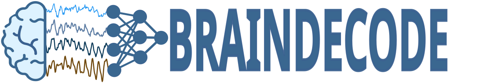
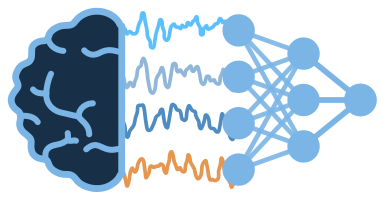
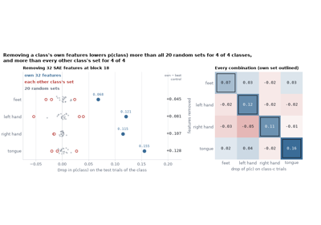
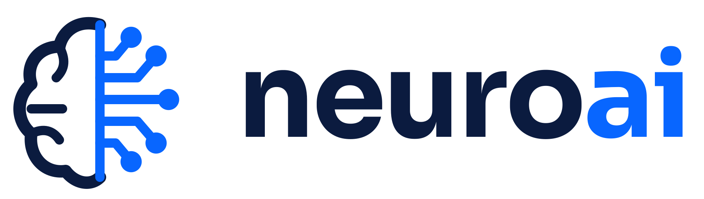
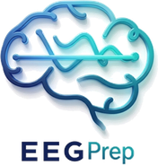
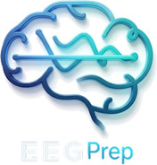

Braindecode: PyTorch Deep Learning for EEG, iEEG, MEG & fNIRS#


BRAINDECODE OPEN-SOURCE PYTORCH FOR BRAIN SIGNALS · SINCE 2017Decode Brain Signals
with Braindecode
A PyTorch-native toolbox for end-to-end neural decoding. Load a dataset, pick a published model, train. Same scikit-learn API you already know.
For neuroscientists and clinicians who want to work with deep learning, and machine learning researchers who want to work with neurophysiological data.
Pretrained on the Hub
141 Repos · 402K downloads/mo
Every Braindecode model implements from_pretrained() and push_to_hub() via PyTorchModelHubMixin, serializing a diffable safetensors + JSON pair that records the Hub commit hash and pretraining corpora for auditable fine-tuning. Hub checkpoints connect to 954 BIDS corpora from EEGDashDataset (48,000+ subjects, 138,000+ hours), while Zarr-backed datasets stream lazily via pull_from_hub().
>>> from braindecode.models import EEGPT>>> model = EEGPT.from_pretrained(... "braindecode/eegpt-pretrained",... n_outputs=4,... )>>> model(X_test).softmax(dim=-1)[:3]tensor([[0.92, 0.03, 0.03, 0.02], [0.04, 0.89, 0.05, 0.02], [0.02, 0.04, 0.91, 0.03]])>>> from eegdash import EEGDashDataset>>> from braindecode.datasets import BaseConcatDataset>>> bids_ds = EEGDashDataset(... dataset="ds002718", subject="012",... )>>> hub_ds = BaseConcatDataset.pull_from_hub(... "braindecode/bcic2a"... )>>> X, y, crop_ind = hub_ds[0]>>> X.shape(22, 1000)Braindecode by the numbers
1.4M+ PyPI installs & 402K monthly Hub downloads
2.1M+ installations across Braindecode, MOABB, EEGDash, and SPD Learn, maintained openly across 50+ releases and 4,600+ citations since HBM 2017.
1,100+ open datasets & 138,000+ hours ready to train
954 BIDS corpora across 48,000+ subjects via EEGDash and 158 BCI benchmarks via MOABB load through one dataset API.
48 foundation models, checkable end to end
Change the evaluation split or preprocessing, and rankings flip. Shared protocols keep splits leak-free and baselines reproducible.
Built for every neurophysiological signal
Scalp EEG & Sleep PSG
77 models19–128 ch @ 128–512 Hz · C3 Cz C4 Fpz-Cz Pz-Oz · MNE Raw / BIDS / EDF
Intracranial iEEG, ECoG & MEG
16 models64–306 sensors @ 500–2048 Hz · 3D stereotactic shafts & OPM/SQUID arrays
fNIRS Optical & Surface sEMG
15 modelsHbO/HbR optode pairs @ 10 Hz · 2 kHz motor-unit wrist arrays
EEGModuleMixin
+ PyTorchModelHubMixin · torch.nn.Module
X: (B, 64, 1000) @ 250 Hz → n_chans, n_times, sfreq derived
Pass any subset of n_chans, n_times, sfreq, input_window_seconds, or chs_info; missing shapes are derived automatically.
from_pretrained() and push_to_hub() with JSON config and parameter-level provenance.
reset_head(n_outputs) and return_features=True across classifiers and foundation models.
Standard torch.nn.Module compatible with EEGClassifier, Lightning, and torch.compile.
What labs and students build with Braindecode
From student thesis projects to hospital cohorts and NeurIPS competitions, researchers use Braindecode to run checkable experiments and share their models back.
1,197 teams from 247 institutions competed in the NeurIPS 2025 EEG Foundation Challenge on Braindecode and EEGDash, returning in 2026 across 4 EEG & EMG tracks.
NeurIPS 2026 EEG/EMG Challenge · NeurIPS 2025 Challenge · BEETL 2021
Explore NeurIPS challenges →Machine learning of brain-specific wavelet biomarkers from clinical EEG across neurological cohorts.
Bomatter, Paillard, Garces, Hipp & Engemann · F. Hoffmann-La Roche (2024)
Read clinical study →Your next paper here :)
Working on an EEG, iEEG, MEG, fNIRS, or sEMG study with Braindecode? Tell us about your paper, push weights to Hugging Face, or add your architecture to the zoo.
Share your work with us →Convolutional Monge-mapping normalization for sleep EEG, differentiable invariance layers, and multi-scale wavelet pretraining run on Braindecode.
CMMN (Gnassounou et al., 2023) · AugNet (Rommel et al., 2022) · PhysioWave (Chen et al., 2025)
Read NeurIPS paper →Multiverse analysis across 2,592 preprocessing paths and seven ERP CORE paradigms using Braindecode to measure how filtering and artifact removal shape decoding.
Kessler, Enge & Skeide · Max Planck CBS (Communications Biology, 2025)
Read preprocessing study →Class-wise automatic differentiable data augmentation for sleep staging and motor-imagery EEG, contributed directly to braindecode.augmentation.
CADDA · Rommel, Moreau, Paillard & Gramfort (ICLR 2022)
Read ICLR paper →Standardized evaluation and diagnostic analysis of EEG foundation models and Braindecode baselines across 14 datasets and 10 paradigms.
EEG-FM-Bench · Xiong, Li, Li, Zhu & Jiang (ICML 2026, PMLR v306)
Read ICML benchmark →Meta Brain & AI co-leads tracks in the NeurIPS 2026 EEG/EMG Challenge and builds NeuralTrain and NeuralBench directly on Braindecode.
Meta Brain & AI · facebookresearch/neuroai · NeurIPS 2026 Challenge
Explore NeuroAI suite →
+ CVPR 2026Realistic unsupervised domain-adaptation validation across cross-subject BCI cohorts and test-time calibration for EEG-to-image retrieval.
SKADA-Bench (Lalou, Gnassounou et al., TMLR) · SATTC (Huang & Zhu, CVPR 2026)
Explore benchmark code →Everything you need to go from signal to prediction
Built to plug into the neurophysiology ecosystem you already use: every MOABB benchmark (158 datasets), every MNE-Python and EEGPrep preprocessing function, NeuralBench tasks, SPD Learn, and 954 BIDS corpora via EEGDash. One library, no lock-in.
Decode raw electrophysiology
End-to-end models go straight from raw EEG, iEEG, MEG, fNIRS, and sEMG to predictions. No hand-crafted features required.
PyTorch-native, sklearn-friendly
Built on PyTorch and skorch with a Lightning-friendly API. Use EEGClassifier and EEGRegressor for cross-validation, or drop any nn.Module into torch.compile and your own loop.
Every MOABB, NeuralBench & BIDS dataset
All 158 MOABB datasets work out of the box with MOABBDataset, plus NeuralBench tasks, TUH, CHB-MIT, Sleep Physionet, and 954 BIDS corpora (48,000+ subjects) via EEGDash.
Preprocessing & augmentations
Compatible with every MNE preprocessing function and automated EEGPrep ASR cleaning, plus exponential standardization and 20+ differentiable EEG augmentations.
Heterogeneous electrode montages
Train position-aware models across mixed caps with chs_info and pad_channels_collate, or select benchmarked ChannelLayer adapters when deploying rigid checkpoints (Kokate et al., 2026).
Plays well with MNE-Python
Native interop with mne.io.Raw and mne.Epochs. Reuse the sensor montages and analysis tools you already know for QC and visualization.
A unified API, nine modules
From raw recording to trained checkpoint, the same nine modules cover every task: classification, regression, sleep staging, seizure detection, and self-supervised pretraining.
Data & Cleaning
Modeling & Geometry
EEGModuleMixin.
braindecode.modules
Patch tokenizers, RVQ codebooks, filterbanks, spatial kernels & channel layers.
braindecode.augmentation
20+ differentiable time, spectral, and sensor-rotation augmentations.
Train, Score & Interpret
.fit(), .predict_proba() & CV.
braindecode.training
Cropped trial decoding, clinical SzCORE seizure metrics & callbacks.
braindecode.visualization
Spectral input-gradient maps, SAE probes & MNE scalp topomaps.
Train a model in 15 lines
From raw EEG to a trained decoder. Each step is a stand-alone module; swap any piece without touching the others, or switch tabs for Hub fine-tuning and clinical SzCORE evaluation.
# 1. Load BCI Competition IV-2a (subject 3) via MOABBfrom braindecode.datasets import MOABBDatasetdataset = MOABBDataset("BNCI2014_001", subject_ids=[3])# 2. Bandpass-filter EEG channels and slice event windowsfrom braindecode.preprocessing import ( Preprocessor, create_windows_from_events, preprocess,)preprocess(dataset, [ Preprocessor("pick_types", eeg=True), Preprocessor("filter", l_freq=4.0, h_freq=38.0),])windows = create_windows_from_events(dataset, preload=True)# 3. Pick a published architecture; shapes are derived from windowsfrom braindecode import EEGClassifierclf = EEGClassifier("EEGNeX", max_epochs=20, batch_size=64)# 4. Train with scikit-learn compatible fit()clf.fit(windows, y=None)# 1. Read EEG recording with 3D electrode metadataimport mneraw = mne.io.read_raw_edf("patient_eeg.edf", preload=True)raw.set_montage("standard_1020")# 2. Pull audited LaBraM weights from Hugging Face Hubfrom braindecode.models import Labrammodel = Labram.from_pretrained( "braindecode/labram-pretrained", # 3. Pass sensor metadata & reset classification head chs_info=raw.info["chs"], n_outputs=4,)# 4. Probe frozen embeddings or fine-tune with EEGClassifierfrom braindecode import EEGClassifierclf = EEGClassifier(model, max_epochs=10, optimizer__lr=1e-4)clf.fit(windows, y=None)# 1. Cut held-out CHB-MIT recording into 4 s windows (2 s stride @ 256 Hz)import numpy as np, pandas as pdfrom braindecode.preprocessing import create_fixed_length_windowswindows = create_fixed_length_windows( test_ds, window_size_samples=1024, window_stride_samples=512, preload=True,)# 2. Predict seizure probability for each windowprob = clf.predict_proba(windows)[:, 1]starts = windows.get_metadata()["i_start_in_trial"].to_numpy() / 256.0# 3. Smooth causally over past windows and extract alarm intervalssmooth = pd.Series(prob).rolling(5).mean().rolling(3).min().to_numpy()alarms = starts[smooth > 0.9]events = np.c_[alarms + 2.0, alarms + 4.0]# 4. Score overlap sensitivity, F1 & false alarms/24h under SzCOREfrom braindecode.training import szcore_event_scoresscores = szcore_event_scores(ref_seizures, events, duration_s)Explore 103 published architectures
Every model is reproduced from its original paper and ships with a consistent constructor. The shared EEGModuleMixin takes any of n_chans, n_outputs, n_times, chs_info, input_window_seconds, or sfreq; the missing ones are derived for you. Hover any pill or card to preview its Python API.
No architectures match the active modality, backbone, or search query.
Runnable tutorials from executed notebooks
 Motor Imagery · EEG
Motor Imagery · EEG
Trialwise decoding on BCI Competition IV-2a
 Hugging Face Hub
Hugging Face Hub
Load, adapt, and audit pretrained foundation models
 Montage · ChannelLayer
Montage · ChannelLayer
Exact, spherical-spline, and source montage interpolation

Mechanistic XAI · REVECausal sparse-autoencoder feature interventions on REVE
 Sleep PSG
Sleep PSG
Clinical polysomnography staging on Sleep Physionet
 Attribution & XAI
Attribution & XAI
Amplitude-spectrum gradients and randomization checks
Built and shared with neighbors
Open neural decoding does not live alone. Braindecode plugs into a wider open-source neuroscience stack, ships sibling projects that round out the data story, and is built upon across MNE-Python, EEGDash, MOABB, NeuralBench, NeuroAI, Meta Brain & AI, SPD Learn, EEGPrep, and skorch.
MNE-Python
Direct ingestion of mne.io.Raw, mne.Epochs, BIDS metadata, and 3D sensor montages.
EEGDash
954 BIDS-curated EEG, MEG, iEEG, fNIRS, and EMG datasets across 48,000+ subjects and 138,000+ hours returning PyTorch-ready Braindecode datasets.
MOABB
Leak-free within-session, cross-session, and cross-subject BCI benchmarks wrapping 158 open datasets via MOABBDataset.
NeuralBench
Standardized evaluation across EEG, MEG, fNIRS, and sEMG tasks built directly on Braindecode models and Hub checkpoints.


Neuro-AI suiteNeuroAI
Modular Python suite (NeuralSet, NeuralFetch, NeuralTrain, NeuralBench) for large-scale neurophysiology training.
Meta Brain & AI
Co-leading NeurIPS 2026 EEG/EMG Foundation Challenge tracks and open-source non-invasive brain decoding models.
SPD Learn
Sibling PyTorch library for geometric deep learning on Symmetric Positive Definite covariance matrices (SPDNet, TSMNet, EEGSPDNet).


Artifact cleaningEEGPrep
Automated SCCN/EEGLAB artifact subspace reconstruction (ASR), bad-channel rejection, and spherical interpolation in braindecode.preprocessing.
skorch
Powers EEGClassifier and EEGRegressor with scikit-learn fit(), predict_proba(), and cross-validation.
Building on Braindecode? Explore dependent projects on GitHub →

Start decoding brain signals today
Install in one command, pull a pretrained foundation backbone or a MOABB / NeuralBench benchmark, and run your first experiment in minutes.